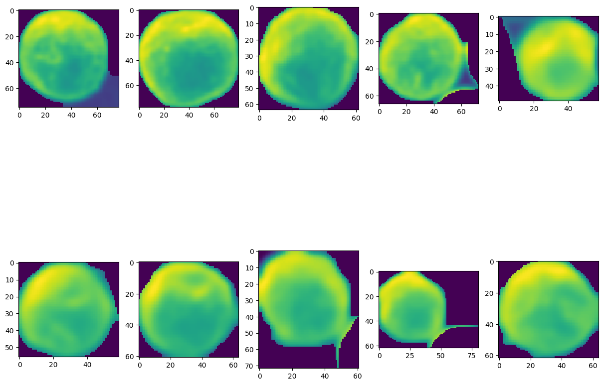

Курсовой проект
Подсчет частиц на изображениях электронных микроскопов
Выполнил: Титов А. С.
Руководитель: Байдин Г. С.
Группа: ИУ8-33
Год: 2019
Введение
Предметная область
- Обработка изображений
- Линейная алгебра
- Обучение без учителя
Актуальность
- Обработка данных
- Научные исследования
Цели и задачи
Подсчет частиц и сегментация изображения. Анализ теоретического материала и реализация прототипов
Подготовка и обработка выборки изображений
Теоретическая часть
- Общие алгоритмы
- Алгоритм пороговой сегментации
- Алгоритм водоразделов
- Нейронная сеть U-Net
- Алгоритм спектральной кластеризации
Общие алгоритмы
Медианный фильтр
Фильтр Гаусса
Маркировка бинарной матрицы
Алгоритм пороговой сегментации
Подзадача: определение порогового значения
Способы определения:
- ISODATA (ИСОМАД)
- Mean (Среднее)
- Triangle (Метод треугольника)
- Otsu (Оцу)
ISODATA
Среднее
Triangle
Otsu
Алгоритм водоразделов
Построение карты расстояний
Нахождение локальных минимумов
Примение водораздела
Нейронная сеть U-Net

Спектральная кластеризация
Подготовка графа, нормирование весов
Применение спектральной кластеризации
Примечание: необходимо задать количество кластеров
Программная реализация
Python 3.7, pipenv
Существующий инструментарий:
- numpy
- matplotlib
- imageio
- sklearn
- scikit-image
- pyamg
Модуль алгоритмов
Модуль core
Модуль core
Демонстрационный модуль
Модуль demo
Модуль demo.config
Технологии и методы программирования
- Тестирование модуля алгоритмов и демонстрационного модуля
- Документация при помощи Doxygen
- Docker образ
- CI/CD: Gitlab, Travis
- Интерпретируемые файлы на языке bash
Тестирование
Модуль tests
----------- coverage: platform linux, python 3.7.5-final-0 -----------
Name Stmts Miss Cover
--------------------------------------------------------
/opt/builder/core/Algorithm.py 39 0 100%
/opt/builder/core/AlgorithmList.py 61 0 100%
/opt/builder/core/Dataset.py 13 0 100%
/opt/builder/core/Utils.py 25 0 100%
/opt/builder/core/__init__.py 0 0 100%
--------------------------------------------------------
TOTAL 138 0 100%
================== 42 passed, 6 warnings in 165.85s (0:02:45) ==================
Документация
Python + Doxygen = ?
Docker образ
Запуск docker контейнера
APP_NAME=threshold|watershed|spectral_clustering
TAG_NAME=latest|dev
docker run -it --rm \
-v $(pwd):/opt/builder/ \
-w /opt/builder/demo \
toliak/course-project-2019:$TAG_NAME \
python $APP_NAME.py
Запуск docker контейнера с помощью скрипта
APP_NAME=threshold|watershed|spectral_clustering
TAG_NAME=latest|dev
./scripts/docker.sh $TAG_NAME python $APP_NAME.py
CI/CD Gitlab
Этапы:
- Сборка
- Тестирование
- Доставка
CI/CD Travis
Тестирование
Результаты
Все результаты работы демонстрационных приложений сохраняются в директории artifacts
Пороговый алгоритм
Алгоритм водоразделов
Спектральная кластеризация
Сравнительный анализ
| Средства\Материал | B, Au | Au | Au, nano p-s | Carbon | |
|---|---|---|---|---|---|
| Внеш. | Ручной подсчет | 15000 ± 1000 | 800 ± 100 | 850 ± 10 | 60 ± 10 |
| Реализ. | ISODATA | 8044 | 870 | 732 | 69 |
| Mean | 7469 | 859 | 633 | 1478 | |
| Triangle | 16918 | 806 | 617 | 217 | |
| Otsu | 8044 | 870 | 732 | 70 | |
| Watershed | 8428 | 891 | 656 | 57 | |
| Средства\Материал | Серебряная пыль | |
|---|---|---|
| Ручной подсчет | 10 | 137 |
| Spectral Clustering | 10 | 104 |
Погрешность
Пороговые алгоритмы и алгоритм водоразделов
Количество определенных частиц
Спектральная кластеризация